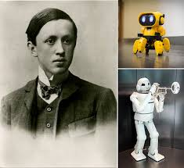

Karel Čapek fue un escritor en lengua checa conocido por acuñar el moderno concepto de robot.Realizó sus estudios de filosofía y estética en la Universidad Carolina, pero también cursó estudios en la Universidad Humboldt de Berlín y en La Sorbona.
Nacimiento: 9 de enero de 1890, Malé Svatoňovice, Chequia.
Fallecimiento: 25 de diciembre de 1938, Praga, Chequia.
Influenciado por: John Dewey, George Bernard Shaw, H. G. Wells.
Hermanos: Josef Čapek, Helena Čapková.
Influenciados: Salman Rushdie, Ray Bradbury, Dan Simmons, Brian W. Aldiss.
volver a página principal